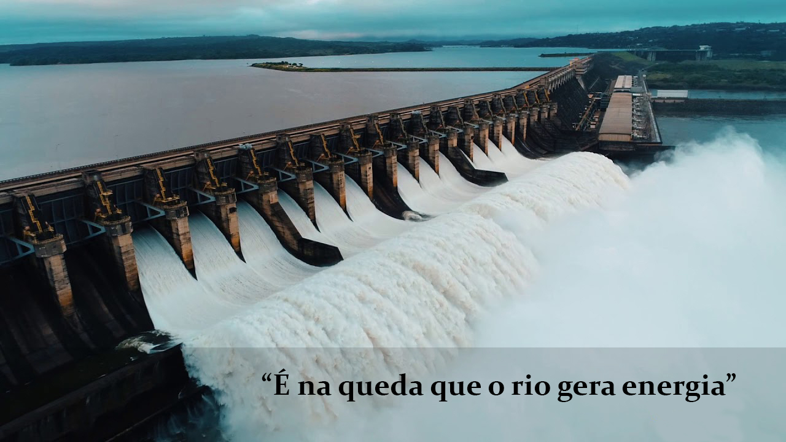
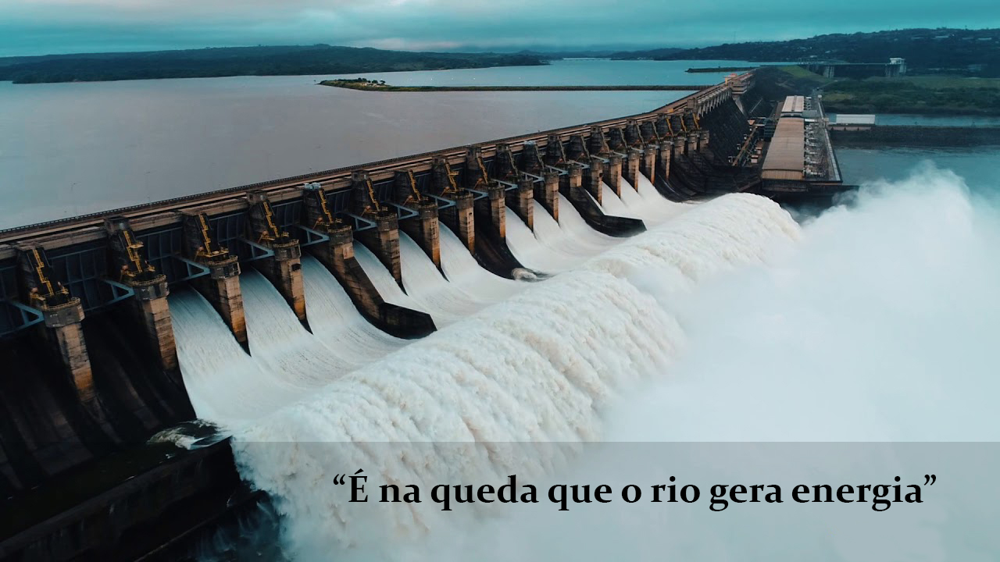

Quem somos?
A Cleanergy surgiu em 2010 visando desenvolver soluções para a necessidade global de energias sustentáveis. Auxiliamos as empresas na implantação dessas tecnologias e, através de, apresentações de pesquisas e relatórios em congressos e eventos, apoiamos o crescimento do mercado na área de maneira ativa e amigável.
Nascemos como uma instituição sem fins lucrativos, tendo como objetivo de facilitar o acesso a informação sobre energias limpas, de maneira a proporcionar uma mentalidade sustentável e ajudar no planejamento e desenvolvimento e uso de energias verdes.
Somos difusor de conhecimentos, centralizando o acesso as informações das mais novas tecnologias na área. Resumindo, prezamos pela transparência e difusão do conhecimento de maneira clara e utilizando linguagem simples.
Energia Eólica
O Brasil é um país cuja produção de eletricidade baseou-se, historicamente, na dependência de duas principais matrizes: a hidrelétrica, predominante e prioritária, e a termoelétrica, cuja maioria das usinas opera somente em tempos de baixa da primeira matriz citada. Por esse motivo, a expansão da energia eólica no Brasil surge a partir da necessidade de diversificação das fontes energéticas do país para que este fique menos suscetível a crises no setor e também gere menos impactos ao meio ambiente.
A energia eólica, que transforma em eletricidade a força de um recurso inesgotável como o vento, é uma aposta sustentável e de valor para o futuro. O aproveitamento do vento exige a instalação de parques eólicos, sejam em terra ou alto mar, com dezenas de aerogeradores. Estes gigantes se tornaram parte da paisagem nos últimos anos; mas sabemos como eles funcionam?
Obtida a partir da força do vento, um aerogerador transforma a energia cinética das correntes de ar em energia elétrica, sendo a energia eólica uma fonte de energia renovável, com baixo impacto ambiental e baixos teores de emissões de gases de efeito estufa. Com o início da temporada de ventos, o Brasil registrou, em julho de 2022, o primeiro recorde de geração eólica instantânea deste ano.
Atualmente, o Brasil conta com 22,00 GW de capacidade instalada, contudo, há potencial de mais de 1.500 GW em eólicas onshore e offshore, levando o Brasil a ocupar o sexto lugar no Ranking Global de Capacidade Instalada onshore. A indústria eólica brasileira tem o papel crucial de ajudar a enfrentar a emergência climática.
O Brasil conta com aproximadamente 812 parques eólicos, sendo, ao todo, mais de 9200 aerogeradores em 12 estados brasileiros. Com essa capacidade, a energia eólica gera aproximadamente 12,1% de toda a matriz elétrica brasileira, representando 72.2TWh gerados, só em no ano de 2021.
Vantagens:
- Fonte d energia inesgotável;
- Não emite gases de efeito estufa e nem resíduos;
- Reduz a dependência de combustíveis fósseis;
- Ótima rentabilidade de investimento;
- Geração de emprego nas regiões dos parques eólicos;
- Os aerogeradores podem ser instalados sem a necessidade de deslocamento da comunidade.
Desvantagens:
- Intermitência do vento e integração para a geração constante de energia;
- Instalação modifica a paisagem causando impacto visual significativo;
- Poluição sonora;
- Impacto sobre a migração de aves.
Energia Solar
O Sol constitui a principal fonte de energia do nosso planeta e, com a evolução da ciência, surgiram maneiras de aproveitar esse recurso para produção de energia elétrica de forma sustentável, constituindo-se uma das fontes energéticas mais indicadas para substituir as energias produzidas por fontes não-renováveis.
Podemos obter energia solar de três formas: térmica, heliotérmica e fotovoltaica. A energia heliotérmica, ou termossolar, funciona a partir de painéis solares que captam a luz do sol e a reflete para um receptor de ponto fixo que contém um líquido. O calor armazenado aquece o líquido e o vapor produzido movimenta as turbinas, acionando o gerador e produzindo energia.
A forma em destaque para geração é a fotovoltaica. Nela, ocorre a transformação direta da luz do sol em energia elétrica por meio de placas fotovoltaicas, que são fabricadas com materiais semicondutores, em que o silício é o mais usado. A luz solar “é coletada e processada por módulos fotovoltaicos, e os inversores vão transformar a corrente contínua gerada (CC) em corrente alternada (CA) para ser usada em diversas finalidades”, conforme descreve Guevara (2021, online).
Como vantagens e desvantagens do uso dessa matriz energética, citam-se:
Vantagens:
- Energia limpa e renovável;
- Economia na conta de luz;
- Fácil de instalar;
- Alta durabilidade;
- Fácil manutenção;
- Não agride e nem polui o meio ambiente.
Desvantagens:
- Alto investimento inicial;
- Não gera energia a noite;
- Falta incentivos no Brasil.
Essa fonte de provimento de energia elétrica torna-se ainda mais vantajosa no Brasil, visto que o país possui um alto nível de radiação solar durante todo o ano. Todavia, ainda desperta certa resistência da sociedade, devido ao alto custo com o uso de tecnologia.

Energia Maremotriz
A energia maremotriz consiste na captação e transformação de energia resultante do desnível das mares e velocidade das correntes marítimas.
O fenômeno das marés resulta da influência gravitacional exercida tanto pelo Sol quanto pela Lua na Terra, em que há uma alternância entre maré alta e baixa. Por esse ciclo ser altamente previsível, é fácil de saber quando esta fonte estará disponível para geração de energia. Contudo, a maremotriz é viável em poucos lugares, afinal, necessita de condições específicas do litoral, como a forma da costa e o leito marinho, assim como a existência de baías e estuários, que influenciam as mares.
A energia gerada por meio das correntes das marés, normalmente, provém do funcionamento de barragens e de turbinas que se assemelham às turbinas eólicas, em que suas hélices são posicionadas abaixo da superfície do mar.
O sistema formado pela barragem realiza o represamento da água e por esse motivo, costuma ser construído em áreas de baías, enseadas ou reentrâncias do mar no litoral. O controle do fluxo de água é feito por meio de comportas. A água é armazenada quando a maré está cheia e, quando a maré abaixa, a água é liberada, movimentando as turbinas.
Como vantagens e desvantagens do uso dessa matriz energética, citam-se:
Vantagens:
- Fonte de energia limpa;
- Fonte de energia altamente previsível;
- Alta densidade de energia;
- Custos operacionais e manutenção baixos;
- Fonte inesgotável de energia.
Desvantagens:
- Custo de instalação muito elevado;
- Exigências geomorfológicas especificas;
- Transformações no fluxo de água devido as barragens e turbinas;
- Ameaça a vida de espécies de plantas e animais marinhos.
A energia das marés ainda é pouco aproveitada no Brasil, o que se deve principalmente aos custos altos de instalação.
Os locais com maior potencial para esse tipo de geração energética ficam no litoral da região Norte e em uma pequena área do litoral Nordeste do país. O estuário do rio Bacaranga, localizado na capital maranhense, São Luís, registra marés de até 7 metros de desnível. Já na região Norte, fica no Amapá, na cidade de Macapá as ondas podem atingir até 11 metros.
O Brasil possui apenas uma usina-teste para geração de energia elétrica a partir das ondas do mar, que é a usina do porto de Pecém, ficando na cidade de São Gonçalo do Amarante, no estado do Ceará. Sua instalação aconteceu no ano de 2012 e, quatro anos mais tarde o projeto foi paralisado, retomando no ano de 2017.


Energia Hidrelétrica
O uso da força da água para o auxílio da humanidade é de extrema necessidade e já vem sendo utilizada a milhares de anos.
Um exemplo atual são as hidrelétricas!
Elas são compostas por uma barragem a qual é a estrutura necessária para dar a sustentação da represa, que ajuda a manter uma vazão constante para a parte da usina, onde a energia gravitacional da água é transformada em energia elétrica.
O rendimento global de todo o processo é entre 90 à 95%,essa pequena perda ocorre devido o atrito entre os equipamentos. Isso torna a energia da hidrelétrica ótima em uso de grande escala, onde ela pode manter preço e fornecimento constante sem ter problemas com constância.
Apesar do custo da sua implantação ser elevado, o tempo de funcionabilidade das hidrelétricas é alto.
Como vantagens e desvantagens do uso dessa matriz energética, citam-se:
Vantagens:
- Reutilização: devido ao uso ser proveniente da água da chuva;
- Duração: as usinas hidrelétricas possuem uma longa vida útil;
- Sustentável: seu uso não emite gases de efeito estufa;
- Custos: seu custo em relação ao retorno é baixo;
Desvantagens:
- Custo de instalação inicial alto;
- Localidade: seu local precisa ser bem planejado;
- Realocação: sua instalação possui alto impacto na vida local, a qual precisa ser realocada;

Matriz Energética e Matriz Elétrica
Embora tenham nomes parecidos, muitas pessoas confundem a matriz energética com a matriz elétrica, contudo, elas são diferentes. No enquanto, a matriz energética representa o conjunto de fontes de energia disponíveis, como o combustível para movimentar os carros, o gás utilizado para o preparo de alimentos nos lares e utilizado para geração de eletricidade, por outro lado, a matriz elétrica é formada pelo conjunto de fontes disponíveis apenas para a geração de energia elétrica. Dessa forma, podemos concluir que a matriz elétrica é parte da matriz energética. Como já mencionado anteriormente, a matriz elétrica é formada pelo conjunto de fontes disponíveis apenas para a geração de energia elétrica em um país, estado ou continente.